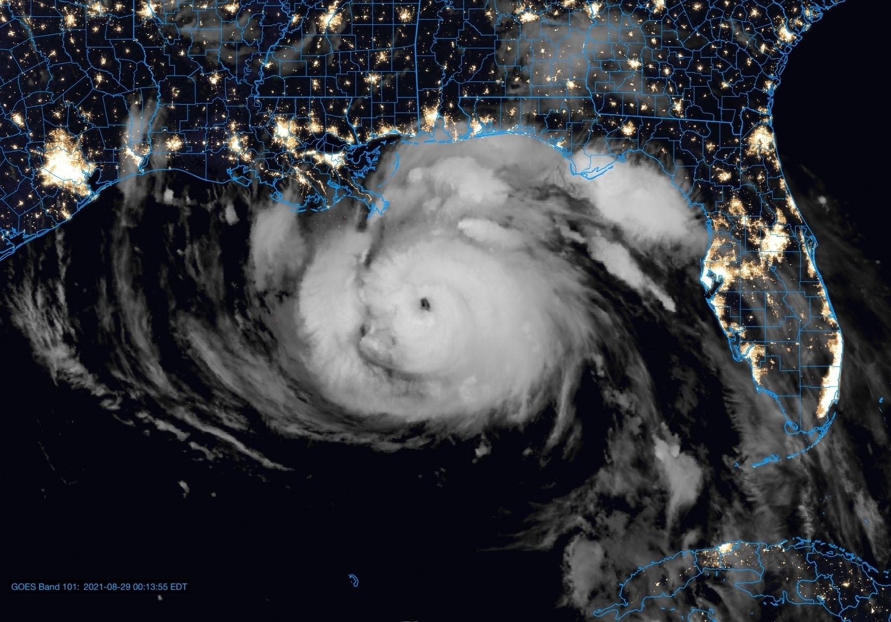

Tidying things up over here on the ol’ micro-dot-blog. Can’t imagine why.
Betas 4 this week?
Should hopefully see Beta 4 of all of the new Apple OS releases this week. Beta 3 hasn’t really been that bad. Some app crashes and restarts here and there on the phone, but overall, nothing too out of the ordinary in a beta cycle. iPad has been in good shape, with the occasional app crash and a few bugs in Stage Manager, but again, it’s been pretty solid all things considered. (Ventura has been really good so far, too, though it could still use some performance tuning and tweaks to Stage Manager.)
Thinking beta 4 is probably going to be one of the last times we see big changes in spots before turning focus to polish in August. If Apple is going to make feature cuts for 16.0, we’ll probably see that in the next 2-3 weeks.
Went with the MacBook Pro 14” with the M1 Pro over the M2 Air. For the money I would have spent on the configuration I wanted for the Air, I’d be out several ports and a card reader, not to mention the brilliant ProMotion refresh rate. What a difference from my 2015 13” MBP!
The overlapping notification bug was indeed fixed in iOS 15.1, and thank goodness for that. What an annoyance. I’m still surprised it made it to the final release.
I hope that someone fixed the notification overlap bug with Summaries in iOS 15.0.2 and just didn’t say anything. That is beyond annoying and makes one of the tentpole features of 15 very difficult to use.
There’s a bad bug in the latest Keynote update for iPadOS (and probably iOS, too). If, on first launch, you open a presentation with font warnings, after dismissing the font warning box you’ll be presented with a totally unresponsive Keynote. You have to open a presentation with no font warnings (or start a new one) in order to get Keynote to get going, which I accomplished through the Haptic Touch context menu. Once that’s done, you are prompted with the “what’s new in Keynote” modal…which likely was the culprit for the whole thing. Ugh.
iPhone 13 Pro Max snap judgements
I received my iPhone 13 Pro Max on Friday. Here’s my snap judgements so far. (Please note that my complaints are solidly rooted in first-world problem territory.)
- ProRAW makes RAW capture so, so, so much more doable on the iPhone. On the iPhone 11 Pro Max, RAW photos would often overexpose horribly when pulled into apps like Darkroom. This is no longer the case and I am very happy.
- Getting the 256 GB model may have been a mistake given how much I like ProRAW.
- Low light performance is as advertised. It’s bonkers how good it is; after reducing the light pollution in post, the starfield in this photo is amazing. This was a 10-second Night Mode capture right out of the stock app which I tweaked in Darkroom.
- Condensing the TrueDepth system and getting a little more screen space back is a win, but the notch has never really bothered me overall. It’ll be interesting to see how app developers take advantage of the extra space. (I see Apple has declined to do so in this initial release aside from making the time and indicators larger.)
- So far, so very good with battery life. Here’s hoping there isn’t such a sudden decline in health as I saw on my 11 Pro Max.
- The iPhone 4 vibes are very real with this phone, right down to the placement of the antenna gaps in the outer stainless steel band. Kind of uncanny. (But it certainly performs well no matter how you hold it.)
- ProMotion has spoiled me on the iPad Pro, and it is so great to finally have it on the iPhone.
- One thing I will miss from my iPhone 11 is the lack of a bottom lip on the Apple Leather case. This not only made swiping up more smooth, it also gave me a good indicator as to which way was “up” when pulling the phone from the pocket. This is not the case with the 13 (and probably wasn’t with the 12, either, but I skipped that), and already I’ve run into a few cases where I pull the phone out, try to unlock it, only to find it’s upside down.
- iOS 15 is still buggy. I sure hope that Apple fixes the bug that breaks Apple Watch unlock while wearing a mask very soon. It’s quite inconvenient.
- The overlapping notifications bug was annoying in the betas. In the final release, and especially on new hardware, it’s unacceptable. I hope this is getting fixed in a point release, because it is so aggravating (to the point where I might have to miss notifications because I can’t get them to display).
All in all, the hardware is great. The software will get better over time (theoretically, anyway). Certainly a must-have upgrade on the X or older, IMO, especially since the Max and standard-size Pro have feature parity this go-around (unlike the 12 Pro and Pro Max).
This is my favorite thing today. (Yes, I realize it’s early.) I’ve loved Dan Siegel’s music for years, and this interpretation with guitars is so, so good.
I think I am finally becoming a real Mac user: both my home and work desktops have gotten uncharacteristically cluttered with lots of random things. (Thank goodness for Stacks.)
Ida is getting it together at absolutely the wrong time for New Orleans, and it doesn’t look like much will get in its way at this point through landfall. I don’t like it one bit for a whole host of reasons, but especially because it looked once again like there was no plan.

Don’t like Ida for my LA/MS/AL Gulf Coast peeps. Please be getting ready now for a major hurricane strike with peak wind impacts in Louisiana — perhaps in the New Orleans metro area — and flooding impacts spreading much further out from the center of the storm.
I could do the easy thing, which is to just stick a local in the path to the PHP interpreter in my LDM ingest script, or I could do the hard thing, which is to Dockerize all of it.
Take a wild guess at what I’m doing.
Wild Friday night over here doing a deep dive into HTML semantics.
Pro tip: If you list “expert in HTML” on your résumé and I’m interviewing you, I’m gonna test that.
Kudos to Apple for reversing course on requiring the bottom-aligned address bar for Safari 15 on iOS. Giving the user choice here was the right call — a win-win for everyone.
What’s on my mind, volume 1, episode 1
What’s on my mind to start the week:
- ⚾️ Good for Reiss Knehr, getting his first major league win in a bullpen game for the Padres. I like his mettle.
- ⚾️ Thank goodness Tatis is back. San Diego desperately needs his bat — and his swagger. So far, so good in right field. It’s a nice luxury to have Jake Cronenworth, a natural shortstop, be able to slide into that position and not skip a beat. Also, how good does that Adam Frazier trade look now?
- ⚾️ The Padres just cannot be dropping series to the likes of the Diamondbacks if they expect to make it very far into October (or even the playoffs at all). The Dodgers and Giants have much better records against the teams that they should beat.
- ⌚️ Where is watchOS 8 public beta 5? Is Apple just going to skip it and seed us with beta 6 this week? (Presuming, of course, we go to weekly releases starting this week.)
- 🖥 I really, really hope the external monitor struggles in Monterey beta 5 are resolved soon. The new release botched the black point on my new 4K LG monitor, and now both the USB-C and HDMI monitors kick on briefly at random intervals. (Previously, only the USB-C/DisplayPort monitor did this.)
- 🤔 Why exactly do I torture myself every summer with betas?
Be good to each other.
Album of the week: Shulamith by POLIÇA
Favorite tunes: Vegas, Tiff, and Matty. Love Channy Leaneagh’s vocals and the use of effects to really make them flow in as another instrument in the ensemble.
So far, so good with the fifth betas of iOS and iPadOS 15. Refinements are definitely starting, but there are still plenty of rough edges, which is to be expected at this stage. I’ve come to really enjoy the notification summaries — I added a midday summary to my slate, for a total of three — and find Focus modes extremely helpful. Syncing Focus state across devices solved a problem I didn’t realize I had until I added the iPad to the mix back in June, when my phone would be on Do Not Disturb but I would forget to set the iPad.
I’m running the dev seed of Monterey on my 2015 MBP, and had a bit of a scare last night when I went back to it and it was powered off. I fired it back up, but it promptly went into a reboot loop every time I tried to log in. Shutting the machine down and powering back up took care of it, and the installation finished successfully. I’ve not spent much time with it since then, though. Here’s hoping the public beta goes on a little smoother today on the M1.
Hoping for a watchOS 8 public beta today as well. Battery struggles are very, very real on beta 4 on my Series 4, so here’s hoping those rough edges start to smooth out on beta 5.
Hybrid Black Halo box set acquired.
I had to buy a SuperDrive to listen to and import these CDs. Completely worth it — Hybrid is quality.
The monitor update nobody asked for
I upgraded my Mac mini’s monitor yesterday. I ended up going with a 27” LG 4K IPS panel.
First impressions are good. I’m hooked to the Mini via DisplayPort over USB-C. The USB-A ports are super-handy (and really a nice bonus), but are notably not rigged for high-power applications such as a charging pad.
Picture quality is great and does the job well for me. Text looks great, which is what I was gunning for, and the viewing angles are exactly what you would expect from an IPS panel. Looking forward to putting it more through its paces this week.
Safari’s new design on iOS 15 is a no-go.
I’m usually really good at adjusting to change, but this isn’t taking. I always expect the address to be at the top of the screen. You need good reason to break decades of convention, and this ain’t it.
Hoping for relief in beta 5.

I think the time is coming to ditch my 4K TN-paneled monitor that I’ve got attached to my Mac mini. I don’t game, I live in text, and I am still unaware of anything better than an IPS panel for textual applications. (I honestly wonder how much eyestrain I’ve incurred because of the TN panel.)
Trying to decide if going ultrawide is worth it at this point, or if I should just stick to a standard wide IPS display with a second monitor rotated into portrait as I have today. If I go ultrawide, I can take the secondary monitor (which has an IPS panel) and move it over to my AWIPS workstation, replacing another older TN panel. On the other hand, I recoil at the price of high-DPI ultrawides, so I might just do the swap.
MacRumors reports that iOS 15 will route people around Flash Flood Warnings. At first glance, this appears to be an extremely smart application of the Dark Sky acquisition. It will be interesting to see if this only applies to Flash Flood Warnings or other warning types. It would also be interesting to see if it applies to flood advisories as well. We often see impassable roads here with a Flood Advisory in effect because Flash Flood Warnings in my county warning area are reserved for the most serious flooding events.

New shirt! A little more niche this go-around. Here’s a wearable love letter to meteorologists’ favorite hunk of Java code anywhere, AWIPS.
Restart and Reboot Yourself (Again)
A year ago, I decided to retire my long-standing WordPress setup for my personal blog and set up a GitHub pages website via Jekyll so that I could accomplish the highly esoteric and somewhat impractical goal of blogging entirely through vim. (Quarantine goals — when we thought the lockdown period would only be about 2-3 weeks — were naively lofty.)
And as it turned out — as so many of my attempts to write on a consistent basis about something other than weather often do — it died on the vine after only five posts. I had the best of intentions, but some habits are hard to break.
I’ve had good luck with syndication for @chswx here on micro.blog. There are certainly kinks to work out, especially as it relates to how WordPress handles images and how that translates over to the service, but it has been pretty solid. But, still, some habits are hard to break. I’m trying, though.
At the same time, I’ve wanted a place for a while now to briefly comment on links or other things that I’ve found useful. However, when considering the cost-benefit analysis of spinning up and maintaining another WordPress install to handle that, it was like…nah. (And yes, I know about WordPress.com’s hosted offering. It’s good! But too much for what I’m trying to do here.)
So, here we are at micro.blog. I’ve transitioned the domain name over, so jaredwsmith.com now resolves here (in case you haven’t checked your address bar ;)). I’m happy about this move for many reasons:
- The micro.blog client is good for posting quickly from the hip. I like that.
- $5/mo to handle mostly infrequent long-form writing peppered with a lot of short-form stuff is well worth it for not having to keep up with security patches on a self-hosted service. (And, it keeps the lights on here — micro.blog is a really important project for the indie Web!)
- I get to use my all-time favorite blogging tool again in MarsEdit.
- I get to write long-form within iA Writer and save the drafts up.
In other words, I get to use really good software to do my writing, it is easily exportable and stays with me forever, and I don’t have to deal with patches (yet can customize the living you-know-what out of this!) And, if I wanted to, I could still use vim.
With the environmental stuff out of the way, it’s once again back on the breaking-old-habits train. See you there?
Safari's TOTP implementation in version 15 is pretty cool, though more websites need to adapt to make it truly useful.
Just installed Monterey on my MBP and am giving the new Safari two-factor authentication magic a whirl. So far, mixed results for autofill from websites, but it’s early. Where it does work, it’s phenomenal.
This post by Dan Moren from Six Colors helps you migrate Authy two-factor codes to Safari. it is a little tedious, and depending on how your Authy is set up, it may require a little trial and error, but it works – a massive timesaver especially since I don’t plan on additional migrations to Monterey or iOS 15 for a while yet.